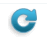
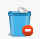
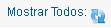

Ayuda Gestor de Mensajes
Contenido:
- Vista General
- Barra de Menús
- Barra de Información Usuario
- Barra de Herramientas
- Paginación
- Filtro
- Bandeja de Entrada
- Actualizar Registros
Vista General
Gestor de mensajes nos permiten enviar, recibir mensajes y archivos de los usuarios del sistema.
Barra de Menús

La barra de menús nos permite tener un acceso direccto un sector del sistema, permite una mejor navegación por el sistema.
La barra de menús varia en base al tipo de usuario logeado (niveles), si ingresa el super admin tendra mayores opciones en la barra de menús, adiferencia de un usuario de nivel bajo solo vera la barra de menús relacionado con el cargo que este ocupa.
Barra de Información Usuario
La barra de información usuario nos muestra la información del usuario Logeado, también nos permite tener acceso directo al gestor de mensajes provenientes de otros usuarios del sistema, podemos finalizar la aplicación de forma segura haciendo clic en Finalizar.
Barra de Herramientas
Esta el la barra de herramientas del gestor de mensajes, cada botón nos permite ejecutar una acción en concreto, a continuación explicamos el funcionamiento de cada botón.
 Actualizar
Este botón nos permite actualizar la página de forma manual.
Puede ser utilizado para refrescar la bandeja de entrada, permitiendo visualizar nuevos mensajes recibidos.
 Nuevo
Nuevo
Este botón nos permite enviar un nuevo mensaje a un usuario del sistema, al presionar se abrira una ventana con un pequeño formulario, en donde indicaremos el usuario a quien enviaremos el mensaje , el asunto del mensaje, y el mensaje.
Enviar Archivo
Este botón nos permite enviar un archivo a un usuario del sistema, al presionar el botón se abrira una ventana con un pequeño formulario, en donde indicamos el usuario a quien enviaremos el archivo, el asunto, y una opcion que nos permite explorar nuestra pc y seleccionar el archivo.
Las extensiones de archivos permitidas son: .pdf , .jpeg, .png, .zip este no debera exeder los 5MB de tamaño máximo, tampoco el nombre del archivo debe contener caracteres extraños.
 Marcar Como Leido
Marcar Como Leido
Este botón nos permite cambiar el estado de un mensaje no leido en leido. para utilizar este botón primero debes de seleccionar un mensaje de la lista y luego presionar este botón.
 Marcar Como no Leído
Marcar Como no Leído
Este botón nos permite cambiar el estado de un mensaje leído en no leído. para utilizar este botón primero debes de selleccionar un mensaje de la lista y luego presionar este botón.
Papelera
Este botón nos permite envíar a la papelera un mensaje o archivo seleccionado. Al efectuar esta acción ya no podremos visualizar el mensaje en la bandeja de entrada, para poder ver todos los mensajes que se encuentran en la papelera, tendremos que mostrar utilizando el filtro ver vista general.
 Eliminar
Este botón nos permite eliminar de forma permanente un mensaje o un archivo seleccionado eliminandolo del sitema. utiliza esto a menos que estes realmente seguro de eliminar.
Paginación

Esta opción nos permite seleccionar de la lista desplegable el número de resgistros o mails a mostrar por página. el número al lado del botón Mostrar nos indica el número de registros actuales a mostrar.
Filtro
Fitro nos permite filtrar los mensajes por estado, podemos ver los mensajes leidos, no leidos, de la papelera o todos.
Muy util cuando existen muchos mensajes y solo quemremos ver los no leidos por ejemplo u otro estado.
Bandeja de Entrada
La bandeja de entrada nos muestra todos los mensajes que tenemos, por defecto nos muestra los mensajes nuevos y los ya leidos.
Al utilizar el filtro la bandeja nos muestra deacuerdo al filtro colocado.
Para Abrir un mensaje solo hacemos clic en el icono del sobre o en el remitente.
Actualizar Registros

Este botón nos permite actualizar la bandeja de entrada, generalmente es utilizado cuando se utiliza el filtro y se desea volver al estado inicial.